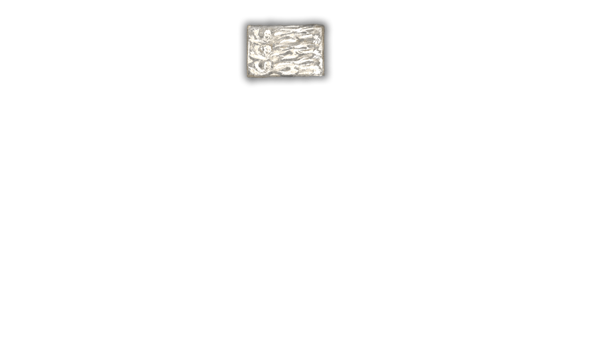
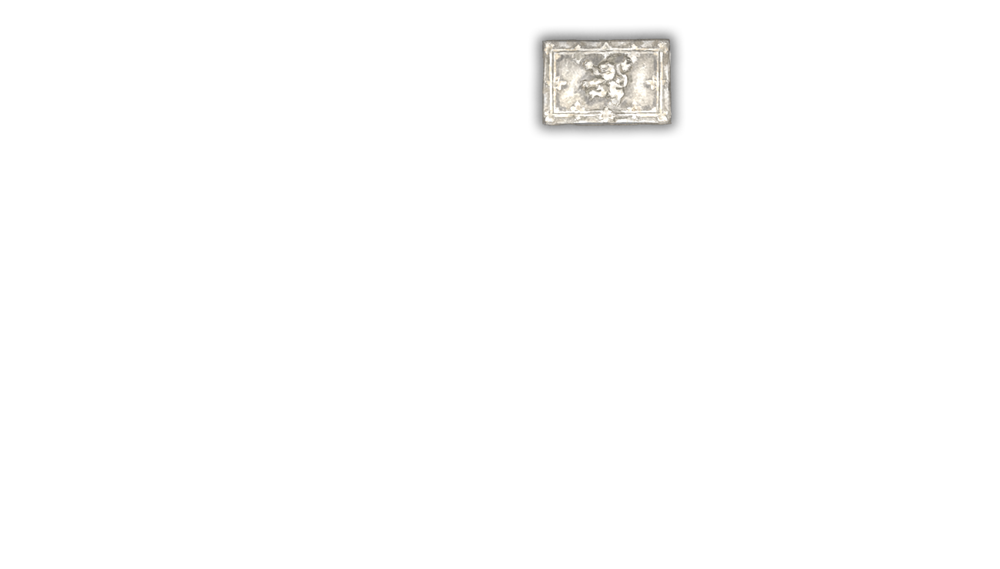
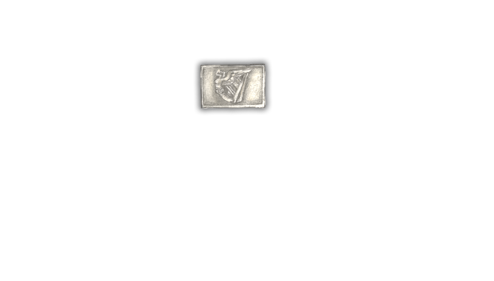
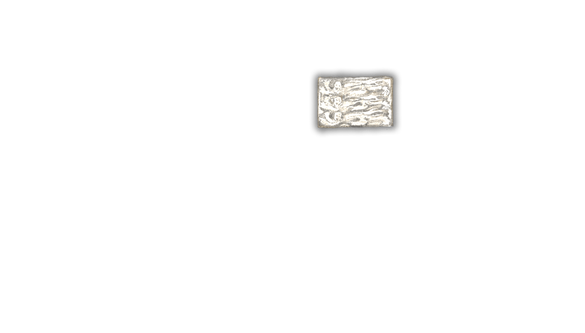
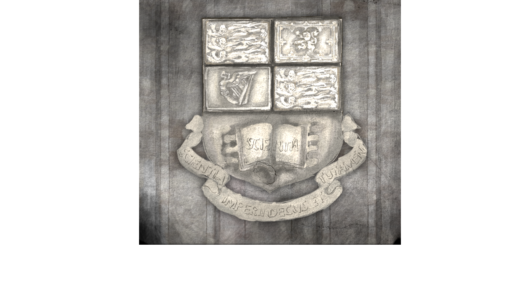
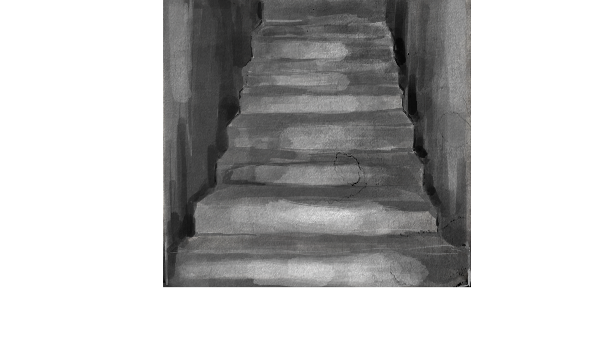

<div id="qtr">

    

    <!-- QTR HOVERS  -->
    

    

    

    

    <!-- QTR COMPLETED SHOWS -->
    
    
    
    

     
     
    <!--TODO - This scene needs as background the outdoors scene at night-->

    <!--TODO replace this with the clickable door-->
    <!-- <p ng-click="outside_door_click()">Door</p> -->
    
    <!--subtitles-->
    <p>{{narration.outside_door}}</p>

</div>
